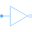
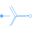
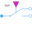
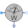

PlugToPins_pConnect all (positive) pins |
Diagram
{kind=link}
Information
This information is part of the Modelica Standard Library maintained by the Modelica Association.
Connects all m single phase (positive) pins of the multi phase (positive) plug to an array of m single phase (positive) pins.
See also
Connectors (2)
| plug_p |
Type: PositivePlug |
|
|---|---|---|
| pin_p |
Type: PositivePin[m] |
Components (1)
| plugToPin_p |
Type: PlugToPin_p[m] |
|---|
Used in Examples (1)
|
Modelica.Electrical.QuasiStationary.MultiPhase.Examples Unsymmetrical threephase load |
Used in Components (11)
|
Modelica.Electrical.QuasiStationary.MultiPhase.Basic Star connection |
|
|  |
Modelica.Electrical.QuasiStationary.MultiPhase.Basic Delta (polygon) connection |
|  |
Modelica.Electrical.QuasiStationary.MultiPhase.Basic Star connection of multi phase systems consisting of multiple base systems |
|
Modelica.Electrical.QuasiStationary.MultiPhase.Basic Delta (polygon) connection of multi phase systems consisting of multiple base systems |
|
|  |
Modelica.Electrical.QuasiStationary.MultiPhase.Ideal Multiphase ideal commuting switch |
|
Modelica.Electrical.QuasiStationary.MultiPhase.Ideal Multiphase ideal intermediate switch |
|
|
Modelica.Electrical.QuasiStationary.MultiPhase.Sensors Potential sensor |
|
|
Modelica.Electrical.QuasiStationary.MultiPhase.Sensors Power sensor |
|
|  |
Modelica.Electrical.QuasiStationary.MultiPhase.Sensors threephase Aron sensor for active power |
|
Modelica.Electrical.QuasiStationary.MultiPhase.Sensors threephase sensor for reactive power |
|
|
Modelica.Electrical.QuasiStationary.MultiPhase.Interfaces Two plugs with pin-adapter |